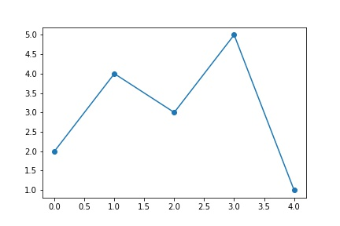

Fichiers¶
La fonction savefig() permet de sauvegarder. L’extension du fichier determine le format.
y = [2, 4, 3, 5, 1]
plt.plot(y, 'o-');
plt.savefig('img/demo.png')
plt.savefig('img/demo.jpg')
plt.savefig('img/demo.pdf')

Les trois fichiers se trouvent dans les dossier local. Le PDF est le plus petit, le JPG le plus grand.
ll img/demo*
-rw-r--r-- 1 raphael staff 17497 Jan 17 20:38 img/demo.jpg
-rw-r--r-- 1 raphael staff 5973 Jan 17 20:38 img/demo.pdf
-rw-r--r-- 1 raphael staff 13472 Jan 17 20:38 img/demo.png
L’mage peut être affiché avec la commande 
